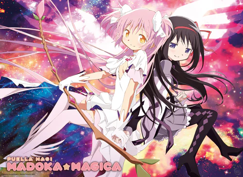

Puella Magi Madoka Magica

Puella Magi Madoka Magica (2011)
Anime/ Mahō shōjo/ Ficção/ Suspense Psicológico/ Romance/ Terror
⭐ 10.0
Minha avaliação: ★★★★★
- Direção: Akiyuki Shinbo
- Estúdio: Aniplex/Shaft
- País de origem: Japão
- Duração: 12 episódios
- Classificação indicativa: 13
- Disponível em: Amazon Prime Video
Sinopse
A história de Madoka Kaname, uma estudante que pode se tornar uma garota mágica ao fazer um desejo, em troca de lutar contra as "bruxas.
Trailer
Minha Avaliação
PH